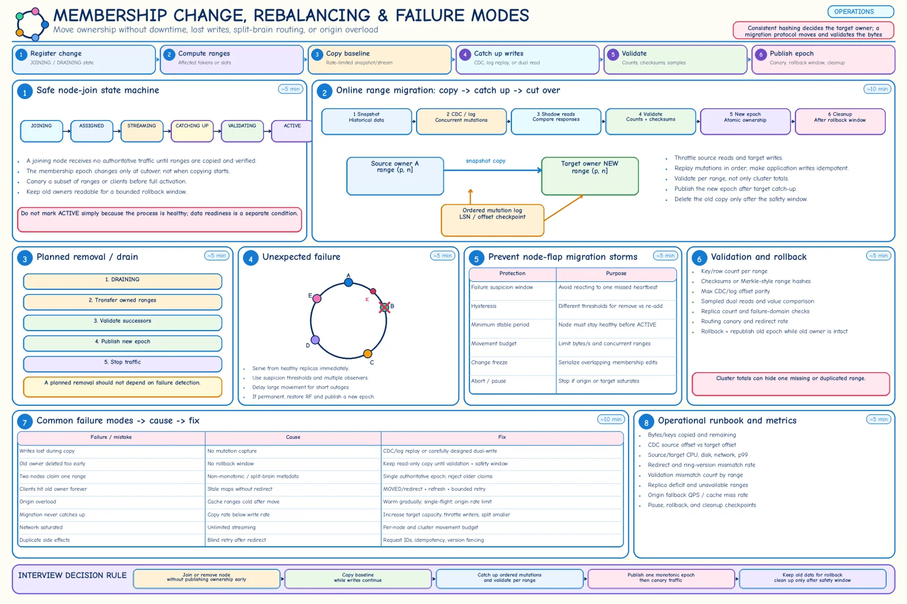

Topic · Consistent Hashing in Depth
Membership Changes and Rebalancing
The ring says which ranges should move. Joining, draining, failing, and actually moving the bytes safely is the real work.


Quick Revision
- Add 1 node: ~
1/(N+1)moves; remove 1: ~1/Nreassigned (balanced, equal nodes). - Join: JOINING → copy → replay writes → validate → new epoch → canary → ACTIVE.
- Drain: ACTIVE → DRAINING → TRANSFERRING → VALIDATING → REMOVED.
- A timeout is a suspicion, not a removal: serve from replicas, rebalance only when permanent.
- Validate per range; keep old owners readable for rollback.
Join, remove, fail
- Add - new token X takes
(predecessor(X), X]. Register JOINING → assign tokens → identify sources → snapshot → replay concurrent writes → validate counts/checksums/versions → publish epoch → canary → keep old readable → clean up. - Cache shortcut - lazy refill instead of copy, but protect the origin from a miss storm.
- Planned removal - stop new ownership, transfer to successors, validate, publish epoch, stop traffic, retain rollback data.
- Unexpected failure - detect with multiple observations → route to replicas → hold ownership during a suspicion window → if permanent, replace or restore RF → stream only missing ranges → new epoch.
- Anti-flap - hysteresis and minimum stable periods.
Moving data
provision → snapshot/copy → replay ordered mutations → shadow/dual-read → validate parity → publish epoch → canary → retain rollback → cleanup migration_time = (affected primary bytes + new replica bytes) / effective bandwidth 180 GB / 100 MB/s ≈ 30 min + catch-up + validation + cutover + rollback watch
- Validate per range - key/byte counts, checksums or Merkle hashes, max offset, sampled reads, invariants, replica count and zones.
- Cache options - eager copy (keeps hit ratio), lazy refill (origin risk), warm hot keys, dual read target → source → origin, serve stale from source if safe.
- Can't catch up - more target capacity, smaller ranges, throttle writers, or brief final freeze. Never cut over a lagging target.
- Headroom - keep 20-30% memory/network spare for failure and rebalance.
Observability
- Per node - keys, bytes, primary/replica ranges, QPS, p50/p95/p99, CPU/memory/disk/network, errors, hot keys/tenants.
- Control plane - epoch convergence, churn, redirects, bytes moved, stream rate/lag, validation mismatches, replica deficits, rollback/cleanup status.
- Cache/origin - hit and byte-hit ratio, origin fallback QPS, miss amplification after changes, single-flight waiters, warm-up progress.
Trade-offs
| Choice | Benefit | Cost / risk |
|---|---|---|
| Eager data transfer | Keeps hit rate/readiness | Network, disk, CPU load |
| Lazy cache refill | No copy pipeline | Origin miss storm, cold latency |
| Immediate rebalance on failure | Fast nominal recovery | Thrash on transient failures |
| Replica failover, delayed rebalance | Stable in short outages | Temporary under-replication |
Failure modes
- Lost writes during migration - CDC/log replay.
- Stale values on target - ordered offsets, versions, idempotent apply.
- Deletes reappear - tombstones / versioned deletes.
- Cutover too early - offset parity + validation gates.
- Old data removed too soon - read-only safety window.
- Migration never catches up - capacity, smaller ranges, throttle, brief freeze.
- Latency spikes during rebalance - per-node and cluster movement budgets.
- New cache node overloads DB - warm hot keys, gradual fill, single-flight, origin QPS limits.
- Node flapping - suspicion window, hysteresis, min stable period.
- Healthy averages hide one hot node - per-node/per-token alerts.
- RF not restored - under-replication scanner + range repair.
- Restore mismatches map - version data and ring metadata together.
- Many nodes added at once - incremental rollout, movement budget.
Interview practice
Answer aloud, then reveal.
What moves when a node is added? Removed?
Added: its predecessor ranges (~1/(N+1)). Removed: its ranges go to next eligible owners; replicas serve meanwhile.
Why not rebalance immediately on a timeout?
It may be transient; full movement can destabilize healthy nodes. Use replicas and a suspicion window first.
How do you migrate without lost writes?
Snapshot at a known log position, capture and replay later changes in order, idempotent retries, validate, then publish routing.
What if migration can't keep up with live writes?
Add target capacity, cut source load, split the range, throttle non-critical writers, or freeze briefly for the final delta.
How should node failure be detected?
Health checks/gossip with multiple observations; treat it as suspicion; separate temporary failover from permanent rebalance.
What do you monitor during a membership change?
Source/target saturation, bytes moved, catch-up lag, validation mismatches, redirects, p99, errors, origin QPS, replica deficits, epoch convergence.